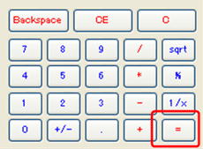

<script src="https://cdn.jsdelivr.net/gh/story-doc/js@master/storydoc.js"></script>
<link rel="stylesheet" href="../custom.css"></link>

<screen style="background-color: rgb(236, 233, 216);">
  <span style='border: 1px solid black; left: 9px; top: 10px; background-color: white; width: 230px; text-align: left; display:inline-block;'>&nbsp;</span><br>
  
</screen>

<action name="Perform Calculation">
User types an equal sign (=) and performs the calculation.<br>
System displays a number calculated.<br>
ユーザは、等号（＝）を入力して、計算を実行する。<br>
システムは、計算された数値を表示する。
<test>calculated <Result> is shown.</test>
<test>
Examples:
| First Number | Operator | Second Number | Result |
| 1            | +        | 2             | 3      |
| 3            | -        | 1             | 2      |
| 2            | *        | 3             | 6      |
| 6            | /        | 2             | 3      |
</test>
</action>
